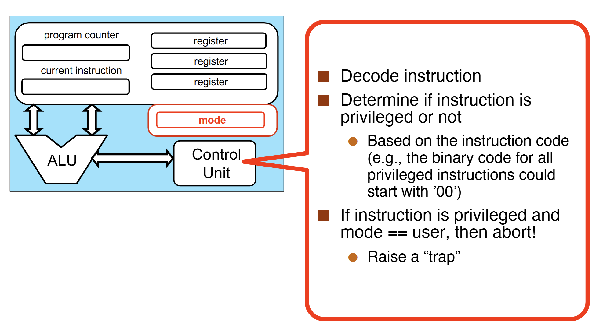
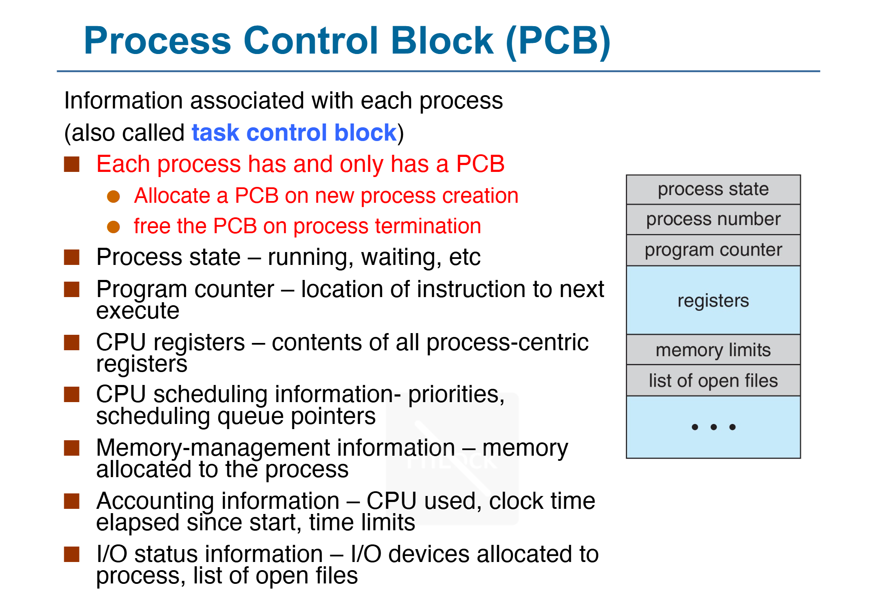
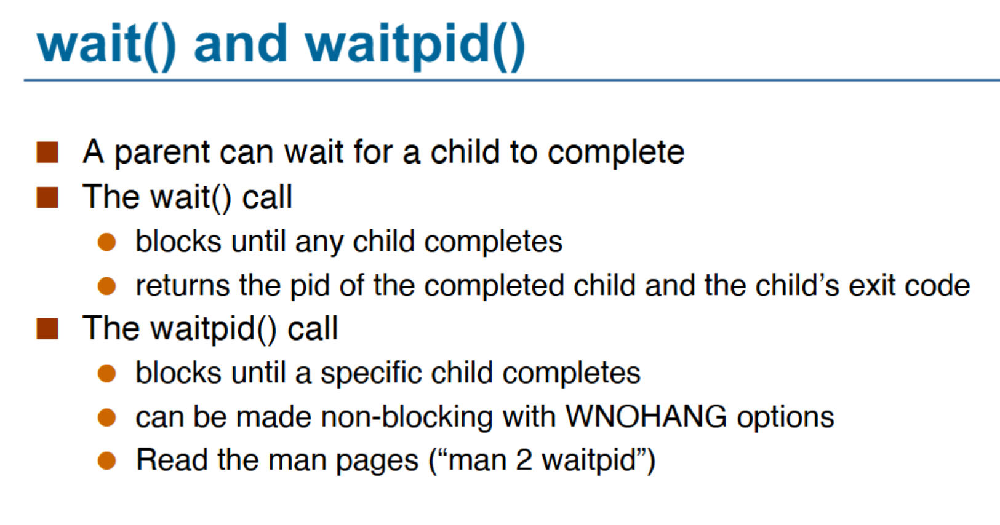

No...
计算机系统 Ⅱ¶
约 2221 个字 22 行代码 18 张图片 预计阅读时间 7 分钟
RISC-V Assembly¶
（其实是系统一的东西）32位指令
- Opcode: 操作码，用于识别指令类型
- rs1: the first register source operand
- rs2: the second register source operand
- rd: the register destination operand
- funct3/7: （从Opcode的指令类型中）确定特定的指令
- imm: immediate value or address

寄存器与内存：

一些例子：

Pipelining¶
通过Overlapping的方式，将多个指令的多个阶段同时进行，以提高CPU的效率。
定义吞吐量（Throughput/TP）：单位时间内完成的指令数。
\(TP = \frac{n}{T} \lt TP_{max}\)且\(T = (m+n-1) \times \Delta t_0\)，其中\(m\)为流水线级数，\(n\)为指令数，\(\Delta t_0\)为流水线时钟周期。
\(TP_{max} = \lim_{n\to\infty} \frac{n}{T} = \frac{1}{\Delta t_0}\)
Solve Bottleneck¶
- Subdivide the task
- Repetition
定义加速比（Speedup/SP）：\(S = \frac{Exetime_{non-pipe}}{Exetime_{pipe}} = \frac{nm\Delta t_0}{(m+n-1)\Delta t_0} = \frac{n}{n+m-1}\)
效率\(E = \frac{SP}{m} = TP \cdot \Delta t_0\)
非线性流水线¶
Operating System¶
ELF¶
C程序编译为可执行文件的四个过程：
- 预处理 —— 宏展开
- 编译 —— 源代码转为汇编
- 汇编 —— 汇编转为机器码
- 链接 —— 将多个目标文件链接为一个可执行文件，链接库
最终的可执行文件包含一个 crt(C runtime)，这个 crt 内会调用 main 函数。
ELF - Executable and Linkable Format 二进制文件内包含如下段（Section）：
- .text: 代码段
- .rodata: read only 数据段
- .data: 数据段
- .bss: 未初始化数据段
- Static linking
- All needed code is packed in single binary, leading to large binary
_startis executed after evecve system call
- Dynamic linking
- Reuse libraries to reduce ELF file size
- Howto resolve library calls?
- It is the loader who resolves lib calls.
- Entry point 是 loader


_libc_start_main: Setup environment and stack, then call main
Memory Layout 内存布局¶

在二进制文件运行时的内存布局。
注意 stack 从高地址向低地址增长，heap 从低地址向高地址增长。

存储在Memory中的数据，基本单元是Byte，每个数据都被一个地址标记。
DMA(Direct Memory Access)：设备直接访问内存，不经过CPU。
OS Structure¶
操作系统是一种“Resource Allocator and Abstracter”，它管理硬件资源，提供抽象接口。

UI: CLI -> GUI -> Touchscreen...
- 简单结构 Simple Structure
- MS-DOS
- 不区分用户和内核态
- 用户程序、操作系统程序、驱动程序都运行在同一个地址空间，可以互相操作
- 整体结构 Monolithic Structure
- Unix
- 有区分用户和内核态
- 操作系统程序运行在内核态，用户程序运行在用户态
- 用户程序通过系统调用访问内核态
- 内核态程序给用户态程序接口来提供服务
- 微内核结构 Microkernel Structure
- Mach, Minix...
- 防止内核态程序过于复杂，漏洞概率更大
- 尽可能多地将内核代码移动到用户态中
- 内核只提供最基本的服务，其他服务通过进程间通信实现：更稳定
- 将操作系统的功能分为多个独立的进程
- 可移植性更好
- 模块化结构 Modular Structure
- Linux (Modular + Monolithic)
- 将内核分为多个模块（loadable kernel module），每个模块负责一个特定的功能
- 模块可以动态加载和卸载
- 保持了微内核结构的优点，同时减少了进程间通信的开销
- 外核结构 Exokernel Structure
- 外内核则进行更少的抽象，来让用户程序可以有更多控制物理资源的可能
- 内核只进行物理资源的分配和保护，而资源的使用、管理都由用户程序自己决定
- 用户程序可以直接访问硬件资源，自己实现操作系统的功能
- 层级结构 Layered Structure
- 为了提高模块化结构的性能，将模块分为多个层次
- 最底层权限最高，为硬件
- 每个层次只能调用比自己低的层次，不能调用比自己高的层次
- 例如，文件系统、网络协议栈等
- 混合结构 Hybrid Structure
- 结合了多种结构的优点
- 例如，Windows NT, Apple Mac OS X
Event¶
Event 分为 Interrupt - 由硬件引起，Exception - 由软件引起。
一些指令会被限制：只有OS能够执行它们（Privileged Instructions），CPU是如何判断当前状态能否执行这些指令的？
- All modern processors support (at least) two modes of execution:
- User mode: In this mode protected instructions cannot be executed
- Kernel mode: In this mode all instructions can be executed
- User code executes in user mode
- OS code executes in kernel mode
- The mode is indicated by a status bit in a protected control register
- The CPU checks this bit before executing a protected instruction

Event是操作流中“不被预期”的情况，CPU会根据Event的类型，调用相应的Handler。
- An event stops execution, changes mode, and changes context
- The kernel defines a handlerfor each event type
OS Code running: Boot -> Wait for Event -> Event Handler -> Return to Wait
特殊的 Event：
- System Call - 会导致Trap -> System Call Handler
- 发生于User Mode下需要执行Privileged Instructions的情况
- e.g., to create a process, write to disk, read from the network card
- 每种ISA都有自己的System Call

- 为什么
printf需要SysCalllibc_write？- 打印到终端这种Device I/O需要 Kernel Mode (Privileged Instructions)
- 发生于User Mode下需要执行Privileged Instructions的情况
- Timer Interrupt - 会导致Regularly Interrupt -> Timer Interrupt Handler

System Call¶
每个Syscall有自己的Syscall Number，通过这个Number来调用Syscall，这个Number就是 Syscall Table 的索引，OS对具体的Syscall不感兴趣，只根据Number跳到Kernel中对应的Handler。
strace可以查看程序的System Call。
https://www.cnblogs.com/machangwei-8/p/10388883.html
SysCall的类型：
- Process control
- create process, terminate process
- end, abort
- load, execute
- get process attributes, set process attributes
- wait for time
- wait event, signal event
- allocate and free memory
- Dump memory if error
- Debuggerfor determining bugs, single step execution
- Locks for managing access to shared data between processes
- File management
- create file, delete fileopen, close fileread, write, reposition
- get and set file attributes
- Device management
- request device, release device
- read, write, repositionget device attributes, set device attributes
- logically attach or detach devices
- Information maintenance
- get time or date, set time or date
- get system data, set system data
- get and set process, file, or device attributes
- Communications
- create, delete communication connection
- send, receive messages if message passing model to host nameor process name
- From client to server
- Shared-memory model create and gain access to memory regions
- transfer status information
- attach and detach remote devices
- Protection
- Control access to resources
- Get and set permissions
- Allow and deny user access
System Service¶
Process¶
进程是一个正在执行的程序的实例，例如说一个ELF加载到内存中，开始执行。
对于同一个Program的不同Process，它们的
- .text段是相同的（Size & Content）
- .data段的Size是相同的，但Content可能不同
- Stack和Heap两者都不同
Process Control Block¶
也称为Task Control Block，是操作系统用来管理进程的数据结构，存储每个进程的信息。
- 每个进程有且仅有一个PCB。
- 在新进程创建时，OS会为其分配一个PCB
- 在进程终止时，OS会回收PCB
- 存储这些：
- Process State - Running, waiting, ready, etc.
- Program Counter - Address of next instruction
- CPU Registers - Contents of all process-centric registers
- Blah blah blah...
- 
Process State¶
As a process executes, it changes state. The state of a process is defined in part by the current activity of that process.
- New: The process is being created.
- Running: Instructions are being executed.
- Waiting: The process is waiting for some event to occur.
- Ready: The process is waiting to be assigned to a processor.
- Terminated: The process has finished execution.

Process Creation¶
一个进程可能会产生多个进程，于是形成一个进程树，ppid是某节点父进程的pid。
fork()是一个SysCall，用于创建一个新的进程，新进程是调用进程的副本（各状态初始完全一致地复制过去），但是有不同的pid，Resource Utilization初始化为0。
- 返回给父进程的是新进程的pid
- 返回给子进程的是0
Quiz


下面这张图里，每次fork()会给当前每个进程都创建一个子进程，所以第一次fork()后有两个进程，第二次fork()后有四个进程。
- (1) 第一行
fork()后，有两个进程（Original进程和它fork出来的子进程） - (2) 第二行在if后括号中的
fork()后，有四个进程 - (3) 并且对 (1) 中两个进程，返回1，对 (2) 中新出现的两个进程，返回0
- 因此 (1) 中两个进程进入if(){}, (2) 中两个进程不进入if(){}
- 在条件语句中的
fork()后，新出现两个进程，目前共6个进程 - 最后的
fork()所有进程都会执行，所以最后有12个进程
exec*()¶
execve()是一个SysCall，v stands for argv（命令行参数），e stands for envp（环境变量）。
- 其余的
exec*()函数类似，但不是SysCall exec*()replaces the current process image with a new process image
exec*后，若执行成功，原进程的ELF会被替换，原进程直接终止，也没有返回值；若没有执行成功，则返回报错信息，原进程继续执行。
wait()¶

Signals¶
进程可以通过信号来通知其他进程，也可以接收信号，例如说Ctrl+C实则是发送了一个SIGINT信号。
- 异步事件，程序必须处理
- SIGKILL和SIGSTOP不能被捕获或忽略（for security reasons）
- 总能Kill进程）
demo: kill a infinite loop with SIGINT forbidden
Zombie Process¶
TBD
Orphan Process¶
TBD